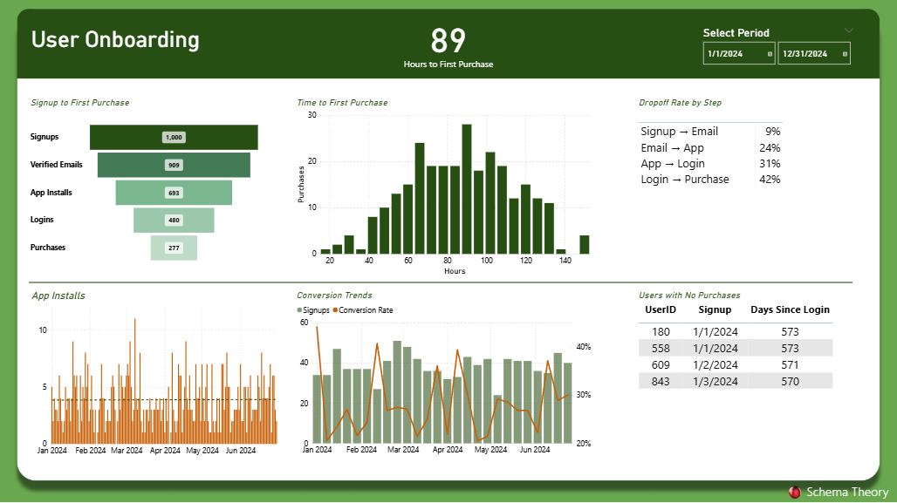

Client & User Onboarding Funnel
Analyze drop-offs, speed up time-to-first-value, and improve activation with this free Power BI onboarding funnel template, complete with tracking plan, SQL/DAX, and example data.
What is an Onboarding Funnel?
An onboarding funnel visualizes how new users move from signup to activation (and beyond), so you can find leaks, reduce friction, and accelerate time-to-first-value (TTFV).

Recommended Steps & Tracking Plan
Start with these steps and tailor to your product:
- Signup
- Email Verified
- First Session
- Core Action (first value)
- Invite Sent (if applicable)
- Billing Activated
Data Model & Columns
Events (fact): UserId, EventName, EventTime, Properties, SessionId
Users (dim): UserId, SignupDate, Plan, Channel, Region
Steps (dim): StepIndex, StepName, MatchEvent
Use Users→Events (1:many) and Steps as an ordering dimension for visuals.
Data Structure: Simplified vs. Normalized
The downloadable PBIX and sample CSV use a simplified wide-table format: one row per user,
with milestone dates in separate columns (SignupDate, EmailVerifiedDate,
AppInstalledDate, FirstLoginDate, FirstValueDate,
plus TTFV_Hours and SignupWeek).
This structure makes it easy to plug data directly into Power BI without extra modeling.
In production, many teams prefer a normalized events table where each row is
UserId, EventName, EventTime. Both approaches work - the wide table is faster to start,
while the events table is more flexible for additional steps and detailed analysis.
If your data is already in an events table, you can pivot it to match the PBIX structure. Example SQL (Postgres / BigQuery style):
WITH base AS (
SELECT user_id, event_name, event_time
FROM events
WHERE event_name IN (
'Signup','EmailVerified','AppInstalled','FirstLogin','FirstValue'
)
),
first_hits AS (
SELECT user_id, event_name, MIN(event_time) AS first_time
FROM base
GROUP BY user_id, event_name
)
SELECT
user_id,
MIN(CASE WHEN event_name='Signup' THEN first_time END) AS SignupDate,
MIN(CASE WHEN event_name='EmailVerified' THEN first_time END) AS EmailVerifiedDate,
MIN(CASE WHEN event_name='AppInstalled' THEN first_time END) AS AppInstalledDate,
MIN(CASE WHEN event_name='FirstLogin' THEN first_time END) AS FirstLoginDate,
MIN(CASE WHEN event_name='FirstValue' THEN first_time END) AS FirstValueDate
FROM first_hits
GROUP BY user_id;
This query takes a normalized events table and outputs the same wide format used in the PBIX.
DAX Measures
Logins =
CALCULATE(
COUNTROWS('onboarding-funnel-data'),
NOT(ISBLANK('onboarding-funnel-data'[FirstLoginDate]))
)
Purchases =
CALCULATE(
COUNTROWS('onboarding-funnel-data'),
NOT(ISBLANK('onboarding-funnel-data'[FirstValueDate]))
)
Signups = COUNTROWS('onboarding-funnel-data')
Verified Emails =
CALCULATE(
COUNTROWS('onboarding-funnel-data'),
NOT(ISBLANK('onboarding-funnel-data'[EmailVerifiedDate]))
)
App Installs =
CALCULATE(
COUNTROWS('onboarding-funnel-data'),
NOT(ISBLANK('onboarding-funnel-data'[AppInstalledDate]))
)
Average TTFV (Hours) =
AVERAGEX(
FILTER(
'onboarding-funnel-data',
NOT(ISBLANK('onboarding-funnel-data'[TTFV_Hours]))
),
'onboarding-funnel-data'[TTFV_Hours]
)
Conversion Rate = DIVIDE([Purchases], [Signups])
Days Since Login = AVERAGEX (
FILTER ( 'onboarding-funnel-data', NOT ISBLANK ( 'onboarding-funnel-data'[FirstLoginDate] ) ),
DATEDIFF ( 'onboarding-funnel-data'[FirstLoginDate], TODAY (), DAY )
)
Days Since Signup = AVERAGEX (
'onboarding-funnel-data',
DATEDIFF ( 'onboarding-funnel-data'[SignupDate], TODAY (), DAY )
)
Dropoff % App → Login =
DIVIDE(
[App Installs] - [Logins],
[App Installs]
)
Dropoff % Email → App =
DIVIDE(
[Verified Emails] - [App Installs],
[Verified Emails]
)
Dropoff % Login → Purchase =
DIVIDE(
[Logins] - [Purchases],
[Logins]
)
Dropoff % Signup → Email =
DIVIDE(
[Signups] - [Verified Emails],
[Signups]
) Benchmarks & Diagnostics
- Email Verified / Signup: 60-90%
- Activation / Signup: 20-40% (varies by complexity)
- TTFV: < 1 session or < 24 hours is a solid target
Where is the leak? (checklist)
- Are steps too broad? Split CoreAction by feature.
- Missing events? Ensure server + client capture.
- Compare by cohort (signup week), not static dates.
- Identity resolution? Align user IDs across platforms.
Downloads
Related KPIs: Activation Rate · Retention Curve · Revenue Churn
FAQs
How do I define “Core Action”?
Choose the smallest action that correlates with retention or revenue (e.g., created first dashboard, shared first file).
Can I use this with mobile SDKs?
Yes - export events into the Events table with the same columns and it will work.